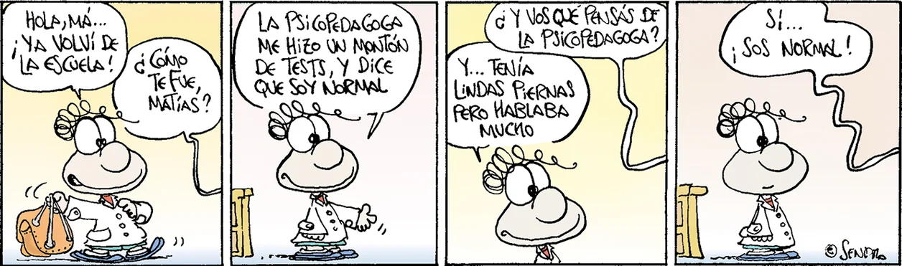

Veritas.net

Historietas nacionales
En veritas, consideramos unos de los clásicos del periódico físico, la Historietas o tiras comicas semanales, uno de los legados de la cultural popular pre digitalizacion que, por su genialidad y viveza de sus autores, consideramos vigentes y a su vez, necesarios de ser recordados.
Clemente, por Caloi
Clemente es un personaje de historieta creado el 8 de marzo de 1973 por el historietista argentino nacido en Salta Carlos Loiseau, más conocido como Caloi. Clemente es un personaje crítico de la realidad, y el fútbol, que representa las características del hombre argentino. Se alimenta fundamentalmente con aceitunas y ocasionalmente con mate.
Yo Matías, por Sendra
Fernando Javier Sendra es un humorista gráfico, dibujante, guionista y historietista argentino. Su personaje más conocido es Matías, el principal de la tira Yo, Matías. Matías, el personaje central de la tira, es un chico travieso, simpático y adorablemente ingenuo, que conjuga ternura con picardía e inteligencia con inocencia. Su mundo son su escuela, su casa, y su barrio. Su fantasía, su imaginación, sus temores, sus deseos, construyen el eje de la historia.
Mafalda, por Quino
Mafalda es el nombre de una tira de prensa argentina creada por el humorista gráfico Quino de 1964 a 1973, protagonizada por la niña homónima, «espejo de la clase media argentina y de la juventud progresista», que se muestra preocupada por la humanidad y la paz mundial y se rebela contra el mundo legado por sus mayores.
Joaquín Salvador Lavado Tejón, conocido bajo el pseudónimo de Quino, fue un humorista gráfico e historietista argentino. Su obra más conocida fue la tira cómica Mafalda, publicada entre 1964 y 1973.
Diógenes y el linyera, por Tabaré
Diógenes y el Linyera es una popular tira cómica dibujada por el historietista uruguayo Tabaré. La misma tiene dos personajes principales: Diogenes, un perro de raza indeterminada e indeterminable, con el nombre siendo una referencia hacía Diógenes de Sinope. Es el personaje en el que suele recaer la responsabilidad del remate cómico en cada tira, a través de las conclusiones cargadas de ironía pero sin malicia a las que llega observando a su dueño, y su dueño, El Linyera, que es un vagabundo que habita alguna plaza de una ciudad que puede ser Buenos Aires o Montevideo.